컴퓨터응용선반기능사 (2010-01-31 기출문제)
1과목: 기계재료 및 요소
1. 델타메탈(delta metal)의 성분으로 올바른 것은?
- 6:4 황동에 철을 1~2% 첨가
- 7:3 황동에 주석을 3%내외 첨가
- 6:4 황동에 망간을 1~2% 첨가
- 7:3 황동에 니켈을 3% 내외 첨가
(정답률: 66%)

2. 핀 이음에서 한쪽 포크(fork)에 아이(eye)부분을 연결하여 구멍에 수직으로 평행 핀을 끼워 두 부분이 상대적으로 각 운동을 할 수 있도록 연결한 것은?
- 코터
- 너클 핀
- 분할 핀
- 스플라인
(정답률: 44%)
3. 다음 금속 중 비중이 가장 큰 것은?
- 철
- 구리
- 납
- 크롬
(정답률: 58%)
4. 두 축이 교차하는 경우에 동력을 전달하려면 어떤 기어를 사용하여야 하는가?
- 스퍼기어
- 헬리컬기어
- 래크
- 베벨기어
(정답률: 61%)
5. 양끝을 고정한 단면적 2cm2인 사각봉의 온도 -10℃에서 가열되어 50℃가 되었을 때 재료에 발생하는 열응력은?(단, 사각봉의 세로탄성계수는 21000N/mm2, 선형평창계수는 0.000012/℃이다.)
- 25.20 N/mm2
- 15.12 N/mm2
- 35.80 N/mm2
- 39.90 N/mm2
(정답률: 44%)
6. 동력전달용 V 벨트의 규격(형)이 아닌 것은?
- B
- A
- F
- E
(정답률: 67%)
7. 합성수지의 공통된 성질 중 틀린 것은?
- 가볍고 튼튼하다.
- 전기 절연성이 좋다.
- 단단하며 열에 강하다.
- 가공성이 크고 성향이 간단하다.
(정답률: 71%)
8. 나사종류의 표시기호 중 틀린것은?
- 미터 보통 나사 - M
- 유니파이 가는 나사 - UNC
- 미터 사다리꼴 나사 - Tr
- 관용 평행 나사 - G
(정답률: 59%)
9. 하물(荷物)을 감아올릴때 제동작용은 하지 않고 클러치 작용을 하며, 내릴 때는 하물 자중에 의해 브레이크 작용을 하는 것은?
- 블록 브레이크
- 밴드 브레이크
- 자동하중 브레이크
- 축압 브레이크
(정답률: 77%)
10. 외경이 500mm 내경이 490mm인 얇은 원통의 내부에 3MPa의 압력이 작용할 때 원주 방향의 응력은 몇 N/mm2인가?
- 75
- 147
- 222
- 294
(정답률: 51%)
11. 비중이 8.90이고 용융온도가 1453℃인 은백색의 금속으로 도금으로도 널리 이용되는 것은?
- Cu
- W
- Ni
- Si
(정답률: 49%)
12. 스프링 소재를 기준에 따라 금속 스프링과 비금속 스프링으로 분류할 때 비금속 스프링에 속하지 않는 것은?
- 고무 스프링
- 합성수지 스프링
- 비철 스프링
- 공기 스프링
(정답률: 60%)
13. 베어링의 호칭 번호 6304에서 6은?
- 형식기호
- 치수기호
- 지름번호
- 등급기준
(정답률: 71%)
14. 일반적으로 탄소강과 주철로 구분되는 가장 적절한 탄소(C) 함량(%) 한계는?
- 0.15
- 0.77
- 2.11
- 4.3
(정답률: 54%)
15. 주조용 알루미늄(Al)합금 중에서 Al-Si계에 속하는 것은?
- 실루민
- 하이드로날륨
- 라우탈
- 와이(Y)합금
(정답률: 54%)
2과목: 기계제도(절삭부분)
16. 치수 기입에서
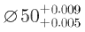
의 표시에서 최대 허용치수는?- 50.009
- 0.009
- 0.004
- 49.995
(정답률: 67%)
17. 나사 표기가 "Tr40×14(P7)"로 표시된 경우 "P7"은 무엇을 뜻하는가?
- 피치
- 등급
- 리드
- 호칭지름
(정답률: 48%)
18. 스프링의 제도에 관한 설명으로 틀린 것은?
- 코일 스프링의 종류와 모양만을 간략도로 나타내는 경우에는 재료의 중심선만을 굵은 실선으로 도시한다.
- 코일 부분의 양끝을 제외한 동일 모양 부분의 일부를 생략할 때는 생략한 부분의 선지름의 중심선을 굵은 2점 쇄선으로 도시한다.
- 코일 스프링은 일반적으로 무하중인 상태로 그린다.
- 그림 안에 기입하기 힘든 사항을 요목표에 표시한다.
(정답률: 59%)
19. 도면에서 특수한 가공을 하는 부분 등 특별한 요구사항을 적용할 범위를 표시하는 특수 지정선은?
- 가는 1점 쇄선
- 가는 2점 쇄선
- 굵은 1점 쇄선
- 굵은 실선
(정답률: 63%)
20. 그림과 같이 필요한 키 홈 부분만을 투상한 투상도의 명칭으로 가장 적합한 것은?
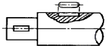
- 보조 투상도
- 가상 투상도
- 회전 투상도
- 국부 투상도
(정답률: 89%)
21. 기하공차를 모양 공차, 자세 공차, 위치 공차, 흔들림 공차로 분류할때 위치 공차에 해당하는 것은?
- ○
- ◎
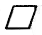
- ∠
(정답률: 56%)
22. 그림에서 d의 위치는 무슨 지시 사항을 나타내는가?
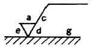
- 가공 방법
- 컷 오프 값
- 기준 길이
- 줄무늬 방향 기호
(정답률: 63%)
23. 그림과 같은 입체도에서 화살표 방향이 정면도일 경우 평면도로 가장 적합한 것은?
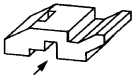
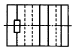
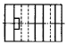
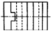
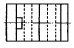
(정답률: 70%)
24. 기계가공용 표준 스퍼 기어 가동도면 요목표에 모듈이 3, 기준 피치원 지름이 ø63으로 표기되어 있다면 잇수는?
- 12
- 21
- 32
- 63
(정답률: 83%)
25. 재질이 구상흑연 주철품인 재료기호의 표시인 것은?
- SC
- KC
- GC
- GCD
(정답률: 41%)
26. 일반적으로 나사 마이크로미터로 측정하는 것은?
- 나사산의 유효지름
- 나사의 피치
- 나사산의 각도
- 나사의 바깥지름
(정답률: 48%)
27. 공작기계를 구성하는 중요한 구비조건이 아닌 것은?
- 가공 능력이 클 것
- 높은 정밀도를 가질 것
- 내구력이 클 것
- 기계효율이 적을 것
(정답률: 86%)
28. 왼측 마이크로미터에서 측정력을 주는 장치로 맞는 것은?
- 앤빌
- 딤블
- 랫치스톱
- 클램프
(정답률: 49%)
29. 밀링머신에서 분할대는 어디에 설치하는가?
- 주축대
- 테이블 위
- 컬럼(기둥)
- 오버암
(정답률: 62%)
30. 수평 밀링머신의 플레인 커터 작업에서 상향 절삭에 대한 특징으로 맞는 것은?
- 날 자리 간격이 짧고, 가공면이 깨끗하다.
- 기계에 무리를 주지만 공작물 고정이 쉽다.
- 가공할 면을 잘 볼 수 있어 시야 확보가 좋다.
- 커터의 절삭방향과 공작물의 이송방향이 서로 반대로 백래시가 없어진다.
(정답률: 65%)
3과목: 기계공작법
31. 밀링 머신에서 주축의 회전 운동을 공구대의 직선 왕복운동으로 변화시켜 직선 운동 절삭 가공을 할 수 있게 하는 부속 장치는?
- 슬로팅 장치
- 수직축 장치
- 래크 절삭 장치
- 회전 테이블 장치
(정답률: 58%)
32. 줄 작업 방법에 해당하지 않는 것은?
- 후진법
- 직진법
- 병진법
- 사진법
(정답률: 62%)
33. 원통 연삭기의 주요 구성 부분이 아닌 것은?
- 주축대
- 연삭 숫돌대
- 테이블과 테이블 이송장치
- 공구대
(정답률: 48%)
34. 래크를 적살 공구로 하고 피니언을 기어 소재로 하여 미끄러지지 않도록 고정하여 서로 상대운동을 시켜 절삭하는 방법은?
- 총형 커터에 의한 방법
- 창성에 의한 방법
- 형판에 의한 방법
- 기어 셰이빙에 의한 방법
(정답률: 35%)
35. 다음과 같은 테이퍼를 절삭하고자 할 때 심압대의 편위량으로 적당한 것은?
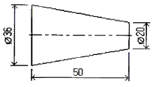
- 8㎜
- 10㎜
- 16㎜
- 18㎜
(정답률: 49%)
36. 회전하는 상자에 공작물과 숫돌입자, 공작액, 콤파운드 등을 함께 넣어 공작물의 입자와 충돌하여 요철을 제거하고 매끈한 가공면을 얻는 가공법은?
- 쇼트 피닝
- 배럴 가공
- 슈퍼 피니싱
- 폴리싱
(정답률: 41%)
37. 원통 연삭의 종류 중 가늘고 긴 공작물을 센터나 척을 사용하여 지지하지 않고 원통형 공작물의 바깥지름을 연삭하는 것은?
- 척 연삭
- 공구 연삭
- 수직 평면 연삭
- 센터리스 연삭
(정답률: 78%)
38. 선반의 조작을 캠(cam)이나 유압기구를 이용하여 자동화한 것으로 대량생산에 적합하고, 능률적인 선반으로 주로 핀(pin), 볼트(bolt) 및 시계부품, 자동차 부품을 생산하는데 사용되는 것은?
- 공구선반
- 자동선반
- 터릿선반
- 정면선반
(정답률: 52%)
39. 절삭저항에 관련된 설명으로 맞는 것은?
- 일반적으로 공구의 윗면 경사각이 커지면 절삭저항도 커진다.
- 절삭저항은 주분력, 배분력, 이송분력으로 나눌 수 있다.
- 절삭저항은 공작물의 재질이 연할수록 크게 나타난다.
- 배분력이 절삭에 가장 큰 영향을 미치며 주절삭력 이라고도 한다.
(정답률: 78%)
40. 일감의 재질이 연성이고, 공구의 경사각이 크며, 절삭 속도가 빠를 때 주로 발생되는 칩(chip)의 형태는?
- 유동형 칩
- 전단형 칩
- 경작형 칩
- 균열형 칩
(정답률: 74%)
4과목: CNC공작법 및 안전관리
41. 가늘고 긴 공작물을 가공할 경우 자중 및 절삭력으로 인한 휨을 방지하기 위해 이용되는 선반 부속장치는?
- 분할대
- 심봉
- 방진구
- 면판
(정답률: 74%)
42. 절삭 공구 재료의 구비 조건으로 틀린 것은?
- 일감보다 단단하고 인성이 있을 것
- 높은 온도에서 경도 저하가 클 것
- 내마멸성이 클 것
- 쉽게 원하는 모양으로 만들수 있는 것
(정답률: 62%)
43. 직경 지령으로 설정된 최소지령 단위가 0.001mm인 CNC 선반에서 U30.으로 지령한 경우 X 축의 이동량은 몇 mm 인가?
- 10
- 15
- 30
- 60
(정답률: 31%)
44. 다음 도면의 (a)→(b)→(c)로 가공하는 CNC 선반 가공 프로그램에서 (①), (②)에 차례로 들어갈 내용으로 맞는 것은?
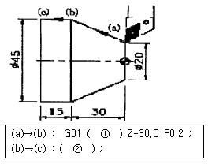
- X45.0, W-15.0
- X45.0, W-45.0
- X15.0, Z-30.0
- U15.0, Z-15.0
(정답률: 62%)
45. 고속가공기의 장점을 설명한 것으로 틀린 것은?
- 절삭저항이 저하되고 공구수명이 길어진다.
- 공구지름이 큰 것을 사용하므로, 효과적 가공이 가능하고 공구가 부러지지 않는다.
- 칩이 가공열을 가지고 제거되기 때문에 공작물에 열이 남지 않는다.
- 난삭재의 가공이 가능하다.
(정답률: 34%)
46. CNC 프로그램에서 선택적 프로그램(program) 정지를 나타내는 보조 기능은?
- M00
- M01
- M02
- M03
(정답률: 51%)
47. CNC 선반에서 스핀들 알람(spindle alarm)의 원인이 아닌 것은?
- 금지영역 침범
- 주축모터의 과열
- 주축모터의 과부하
- 과전류
(정답률: 45%)
48. 머시닝센터 프로그래밍에서 고정 사이클의 용도로 부적절한 것은?
- 드릴 가공
- 탭 가공
- 윤곽 가공
- 보링 가공
(정답률: 55%)
49. CNC 선반에서 제2원점으로 복귀하는 준비기능은?
- G27
- G28
- G29
- G30
(정답률: 50%)
50. 연삭 작업할 때의 유의 사항으로 틀린 것은?
- 연삭숫돌은 사용하기 전에 반드시 결함 유무를 확인해야 한다.
- 테이퍼부는 수시로 고정 상태를 확인한다.
- 정밀연삭을 하기위해서는 기계의 열팽창을 막기 위해 전원투입 후 곧바로 연삭한다.
- 작업을 할 때에는 분진이 심하므로 마스크와 보안경을 착용한다.
(정답률: 81%)
51. CNC의 서보기구(Servo system)의 형식이 아닌 것은?
- 개방회로 방식
- 반폐쇄회로 방식
- 대수연산 방식
- 폐쇄회로 방식
(정답률: 75%)
52. CNC 공작기계 프로그램에서 소수점의 사용이 잘못되어 경보(alarm)가 발생하는 것은?
- G90 G00 Z200.0 ;
- G97 S200.0 ;
- G01 X100.0 F200.0 ;
- G04 X1.5 ;
(정답률: 45%)
53. CNC공작기계 작업시 안전사항에 위배되는 것은?
- 공작물 설치시 절삭공구를 회전시킨 상태에서 해도 무관하다.
- 가공 중에는 얼굴을 기계에 가까이 대지 않도록 한다.
- 칩이 비산하는 재료는 칩 커버를 하든가 보안경을 착용한다.
- 칩의 제거는 브러시를 사용한다.
(정답률: 84%)
54. CNC가공에서 홈 가공이나 드릴 가공을 할 때 일시적으로 이송을 정지시키는 기능의 NC 용어는?
- 프로그램 스톱(program stop)
- 드웰(dwell)
- 옵셔널 블록 스킵(optional block skip)
- 옵셔널 스톱(optional stop)
(정답률: 72%)
55. ø44 드릴 가공에서 절삭 속도 150 m/min, 이송 0.08㎜/rev일 때, 회전수와 이송 속도는 (feed rate)는?
- 1085 rpm, 86.8 ㎜/min
- 320 rpm, 3.52 ㎜/min
- 200 rpm, 3.41 ㎜/min
- 170 rpm, 34.1 ㎜/min
(정답률: 48%)
56. 그림의 프로그램 경로에 대한 공구경 보정 지령절로 맞는 것은?
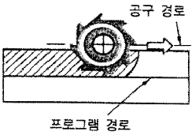
- G40 G01 X___ Y___ D12 ;
- G41 G01 X___ Y___ D12 ;
- G42 G01 X___ Y___ D12 ;
- G43 G01 X___ Y___ D12 ;
(정답률: 43%)
57. 그림과 같은 원호보간 지령을 I, J를 사용하여 표현하면?
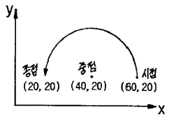
- G03 X20.0 Y20.0 I-20.0 ;
- G03 X20.0 Y20.0 I-20.0 J-20.0 ;
- G03 X20.0 Y20.0 J-20.0 ;
- G03 X20.0 Y20.0 I20.0 ;
(정답률: 42%)
58. CNC 선반의 준비 기능에서 G71이 뜻하는 것은?
- 내외경 황삭 사이클
- 드릴링 사이클
- 나사 절삭 사이클
- 단면 절삭 사이클
(정답률: 59%)
59. 범용 공작기계와 비교하여 CNC 공작기계의 일반적인 특징이 아닌 것은?
- 가공 제품이 균일하다.
- 특수공구의 제작이 불필요하다.
- 유지 보수비가 싸다.
- 복잡한 일감의 가공이 용이하다.
(정답률: 56%)
60. CNC 공작기계의 편집 모드(EDIT Mode)에 대한 설명중 틀린 것은?
- 프로그램을 입력한다.
- 프로그램의 내용을 삽입, 수정, 삭제한다.
- 메모리 된 프로그램 및 워드를 찾을 수 있다.
- 프로그램을 실행하여 기계 가공을 한다.
(정답률: 62%)